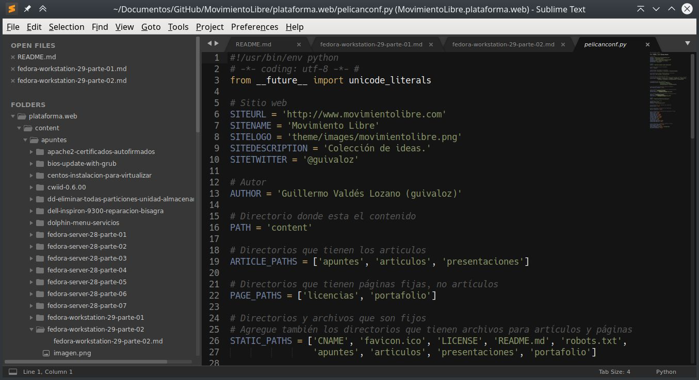

Instalación de Fedora Workstation 29, parte 2
En este apunte sencillamente listo los comandos que irán instalando el software de mi elección personal. Luego de instalar Fedora Workstation con KDE. Primero hacemos una actualización...
# dnf upgrade
Y reiniciamos...
# systemctl reboot

Instale LibreOffice y los programas cliente para PostgreSQL...
# dnf group install --with-optional LibreOffice
# dnf install libreoffice-help-es libreoffice-langpack-es
# dnf install libreoffice-postgresql
# dnf install postgresql
Instale LaTeX...
# dnf search texlive-scheme
# dnf install texlive-scheme-tetex
# dnf install texlive-collection-latexextra
# dnf install texlive-collection-pstricks
# dnf install texlive-babel-spanish texlive-babel-spanish-doc texlive-hyphen-spanish
# dnf install texlive-babel-english texlive-babel-english-doc texlive-hyphen-english
# fmtutil --all -sys
Instale Python...
# dnf group install --with-optional "Python Classroom"
# dnf group install --with-optional "Python Science"
Instale utilerías diversas...
# dnf install system-storage-manager
# dnf install pwgen
# dnf install youtube-dl
# dnf install hwinfo
Instale software de KDE...
# dnf install kate
# dnf install filelight
# dnf install umbrello
# dnf install krename
Instale soporte para impresoras HP...
# dnf install hplip

Instale GIMP...
# dnf install gimp
Instale Inkscape...
# dnf install inkscape
Instale temas de decoración de ventanas de GTK...
# dnf install clearlooks-phenix-gtk2-theme clearlooks-phenix-gtk3-theme
Instale tipografías...
# dnf install liberation-fonts
# dnf install bitstream-vera-sans-fonts bitstream-vera-serif-fonts bitstream-vera-sans-mono-fonts
# dnf install terminus-fonts
Instale el lector y convertidor de libros electrónicos Calibre...
# dnf install calibre
Prepare los repositorios adicionales...
# dnf install fedora-workstation-repositories
# dnf repolist --all

Instale Google Chrome y sus tipografías...
# dnf config-manager --set-enabled google-chrome
# dnf update
# dnf install google-chrome-stable
# dnf install google-noto-sans-fonts google-noto-serif-fonts google-noto-mono-fonts
# dnf install google-droid-sans-fonts google-droid-serif-fonts google-droid-sans-mono-fonts
# dnf install google-roboto-fonts google-roboto-mono-fonts google-roboto-condensed-fonts
Configure los repositorios RPM Fusion...
# dnf install https://download1.rpmfusion.org/free/fedora/rpmfusion-free-release-$(rpm -E %fedora).noarch.rpm \
https://download1.rpmfusion.org/nonfree/fedora/rpmfusion-nonfree-release-$(rpm -E %fedora).noarch.rpm
# dnf update
Para mi equipo, requiero el controlador anterior y binario NVIDIA...
# dnf search nvidia-390
# dnf install xorg-x11-drv-nvidia-390xx akmod-nvidia-390xx
# nano /etc/X11/xorg.conf.d/00-monitor.conf
# systemctl reboot
Instale más programas de RPM Fusion...
# dnf install fuse-exfat exfat-utils
# dnf install ffmpeg ffmpegthumbs
# dnf install mplayer mencoder
# dnf install audacity-freeworld
# dnf install k3b-extras-freeworld
# dnf install kdenlive frei0r-plugins
# dnf install moc
# dnf groupupdate Multimedia
Para usar contenedores, instale Docker, después configure...
# dnf install docker
# dnf install docker-compose

Instale Sublime Text a partir de su propio repositorio...
# rpm -v --import https://download.sublimetext.com/sublimehq-rpm-pub.gpg
# dnf config-manager --add-repo https://download.sublimetext.com/rpm/stable/x86_64/sublime-text.repo
# dnf update
# dnf install sublime-text
Instale Libvirtd...
# dnf group install 'Virtualización' --with-optional
Instale Steam, a partir de RPM Fusion...
# dnf config-manager --set-enabled rpmfusion-nonfree-steam
# dnf install steam

Instale VLC, con complementos desde RPM Fusion...
# dnf install vlc